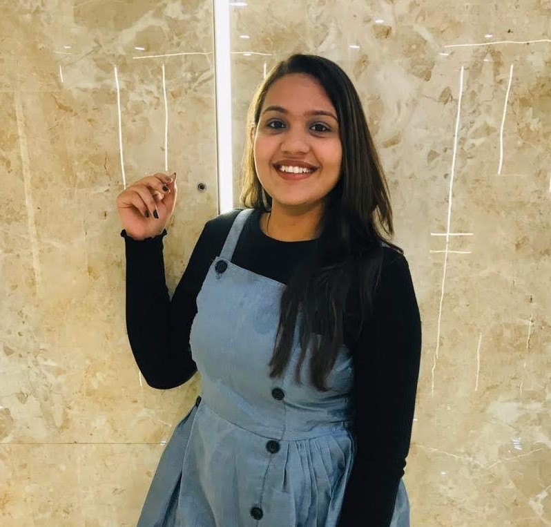
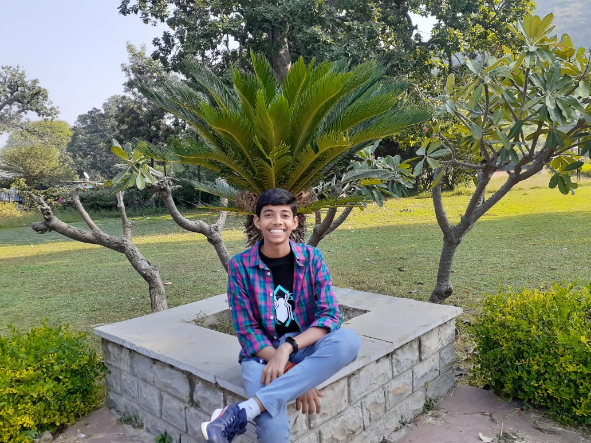

Click here for submitting the shorty-sweety book reviews or summaries. Attach your name, picture, title of the book and name of the author along with the reviews. Word limit is specified to 100-300 words. See below reviews for a better understanding. Keep reading! Keep sharing! :)
Shourya Rohilla
Life Without Limits by Nick Vujicic
There are certain books that move you from inside and then there are books that help you move your problems from inside. 'Life Without Limits' privileges... to fall in both the categories. The mere thought of imagining yourself in place of the author, a person born without arms or legs, can leave you in a dark zone of mind where you don't even know what will you do. Yet this author stands as the central character of his book where he tells the story of his physical disabilities and the emotional battles he endured while learning to deal with them as a child, teen and a young adult. But what is he today? NICK VUJICIC is an international and New York Times best-selling author, evangelist, and most prominently, a motivational speaker. In 'Life Without Limits', Nick talks about the struggles he faced since childhood, and how it took him years to even accept the disabilities he was born with. He walks us through the hardest times of his childhood and casts light on the unique challenges that a person like him faces. But all this for what? To gain sympathy? Never. Through these hardships, Nick inspires you to shatter your own limits that life, or you have placed upon yourself. He motivates you to think that if a person with such disabilities can prosper in life then why can't you? He keeps asking the readers to think about, "What would your life be like if anything were possible?" He eagerly spreads his central message: The most important goal is to find your life's purpose and to never give up, despite whatever difficulties or seemingly impossible odds stand in your way. Every chapter of the book will have your inner spirit rise up a level, and subtly, you will learn to find a way to fight your problems and grow through each one of them. A must read for anyone struggling to find the purpose of their lives. Let Nick inspire you to start living your own life without limits.
Khushi Thakkar
The Hunger Games Trilogy by Suzanne Collins
The Hunger Games Trilogy is a series of 3 young adult novels written with an excellent choice of words, grasping story and ... conviction which transports the reader to an actual Hunger Games world. The novels in the trilogy are The Hunger Games (2008), Catching Fire (2009), and Mockingjay (2010). The novels are based in the Hunger Games Universe, an apocalyptic world, consisting of the wealthy Capitol and 13 districts in varying states of poverty. Each year, the first 12 districts have to send their children to participate in a compulsory televised battle death match called The Hunger Games. The protagonist, Katniss Everdeen, lives in District 12, the poorest area of Panem, where people die of hunger on a daily basis. The novels are based on how ‘Hunger Games’ destroys Katniss’ and her loved ones’ lives when her sister is selected to participate in the games, for whom she volunteers. The first novel involves her journey through the games, the second one is based on the aftermath of the previous games where she had defied the Capitol and won the competition along with her partner and the third novel is based on how she motivates people from all districts to revolt against the Capitol to end an everlasting era of oppression and domination. It is a nail biting, extremely thought-provoking and exciting book which keeps you on the edge and leaves you guessing what is going to happen next, a must read for fiction lovers! Suzanne Collins has definitely outdone herself with this trilogy and a very recent addition of the trilogy’s sequel ‘The Ballad of Songbirds and Snakes’.
Raksha
The Hate U Give by Angie Thomas
To summarize the story I think the simplest slogan I could use is "Black Lives Matter", released before the quote became a global movement that ...questioned racism in all its forms, “The Hate U give“ came with a much more direct and heartfelt perspective into what it actually feels like to be a witness and victim of police brutality due to race/colour of skin. The protagonist of this young adult story is a very real sixteen-year-old girl who was just trying to juggle her two lives; one as part of her hood where she could be who she truly was and the other in her all-white high school where she was one of them. So, when her childhood best friend is shot to death by a white police officer for ‘doing nothing’ her life comes tumbling down to the reality of what it actually is like to be a ‘Black Person’. Her story for justice is a real one rather than heroic as she herself stumbles to find the courage to fight, but it moves us all to see the reality of the so called 21st century America and the root for why ‘Black Lives Matter’ wasn’t just a simple quote or hashtag but a global awakening call to all still bound by ideas of race and white supremacy.

Riya Maheshwari
Fashionopolis by Dana Thomas
Fashionopolis: The price of fast fashion and future of clothes by bestselling journalist Dana Thomas who has traveled the world to ... know about the fashion visionary, designer's innovation and companies who are crafting the future of sustainable technologies to redefine fashion. One of the most easy yet time-consuming question we ask frequently on a regular basis is, what should we wear and how would it look? Right, so from unfurling fast fasion, globalization, trend setters, to different inputs on innovation to the journey of fashion in Fashionopolis redefines the several changes and developments such as 3-D designs, denim processing, material tests etc. The book snaps straight onto unchecked labor to environmental abuse. Thomas asks to resist the fast fasion, as it is exploiting the right amount and quality, she also talk about the vast amount of production at a lightning speed and then delivered to customers at a vague prospect. It's alarming and one should reassess the fashion with broad perspective, from it's production, to design, to environemnt and quality.

Aashray Mody
Right Ho Jeeves by PG Wodehouse
‘What ho what ho what ho’ that’s the style of Bertie Wooster, just another marvellous creation by PG Wodehouse.... Right ho Jeeves one of the finest books I could ever lay my hands on, the portrayal of a rich English gentlemen whose penchant is to fall into trouble in numerous occasions always to be rescued by his valet. Right Ho Jeeves set in the Brinkley manor the stately home of his aunt Dahlia who as described by Wooster carefully fixed coiffure" . Bertram (Bertie) Wooster spent a lovely holiday in Cannes. Upon his return, he had the misfortune to stumble straight into the following mess: a couple engaged to split up a couple in love with each other but because of their... Yeah, hmm. The peculiarities (yes, this is the best word) are unable to accept their feelings. "I have no doubt that by the hour, you could have flung bricks in England's most densely populated districts without endangering the safety of a single girl capable of becoming Mrs. Augustus Fink-Nottle without anaesthetics." Add to this the failure of his aunt Dahila’s to get money from her husband for her magazine to replace her gambling loss, the need to make a speech for Market Snodsbury Grammar School awards, the resignation of Aunt Dahlia's brilliant chief Anatole-and you will begin to get a glimpse of the insurmountable difficulties that Bertie was facing. Like a true warrior, he charged headlong through all the troubles trying to untangle them. It was easy to guess the outcome of his efforts, but you can trust Wodehouse to come up with the most amusing ones all the time. In other words, the more Bertie tried the worse the mess got. A quote from the book which never fails to amuse me “Jeeves, I'm engaged." "I hope you will be very happy, sir." "Don't be an ass. I'm engaged to Miss Bassett.” I have read books in the series each and everyone has impressed me however this book is my favourite as the portrayal of Gussie fink nottle and Madeline Basset really tingle my bones.
Raunak Jain
A Tale of Two Cities by Charles Dickens
One of the best ever published novels. I've never seen a ranking that this novel didn't have. If you've ever ... wondered what it would be like to live through the French Revolution, read this book. You feel the rage, the hopelessness, the vulnerability, and most of all, the fear that enveloped everyone through Dickens' words. Reading this masterpiece was a joy and a privilege.I instantly decided after reading this that I would plan to read the remaining Dickens books . I was completely fascinated by his characters who came to life for me immediately and whose hopes and fears I found myself really caring for. Equally amazing was the plotting and overall story-telling skill of Dickens that I felt was masterful. Dickens writing conveyed the passions and turmoil of the French Revolution. It was an era of great change and great danger at the time of the French Revolution. It was a time when a thirst for revenge encountered injustice, and never was a distinction made between the innocent and the guilty. Dickens' great tale of unsurpassed adventure and bravery unfolds against this turbulent historical background. Dr. Alexandre Manette, unjustly imprisoned for 18 years in the Bastille, is reunited with his daughter, Lucie, and transported safely from France to England.It would seem that in peace they could pick up the threads of their lives. However as luck would have it, the pair are called to the Old Bailey to testify against a young Frenchman wrongly accused of treason, Charles Darnay. Oddly enough, Darnay bears an uncanny similarity to another man in the courtroom, Sydney Carton, the dissolute lawyer's clerk. It is a coincidence that saves Darnay more than once from certain doom. The book is beautifully plotted and rich in suspense, romance, and heroism that culminate in a daring prison escape in the shadow of the guillotine.
Vaibhav Agarwal
Mine by Alisha Mor
We never value people when we have them, but the moment they leave our lives, they become the most ... valuable. This is the message that I got from this book. It is a teen fiction, set in California, with a light hearted romance and a tad bit of humour. This book will take you on a rollercoaster ride filled with emotions where you'll be confused whether to laugh or cry. It's an emotional upheaval but oh so satisfying.
Anirudh More
Accidentally Wes Anderson by Wally Koval
Having followed his work on Instagram for quite a while, I couldn't wait to get ... the book. It's a great visual resource, full of lovely photography and fascinating details and stories of some awesome spots around the globe. Inspiring, full of places you'll want to go and visit, and a brilliant visual resource and reference. If you are a fan of a Wes Anderson film, then you definitely need this book. Accidentally Wes Anderson tells the stories behind more than 200 of the most delightful and fascinating spots on Earth. This book, approved by Wes Anderson himself is perfect for modern travelers and fans of Wes Anderson's distinctive aesthetic, this is an invitation to look at your world through a different lens.

Keshav Akolkar
Rusty and the Magic Mountain by Ruskin Bond
Rusty and his friends Pitamber and Popat find adventure in no small measure when they set out to climb a mysterious mountain ... steeped in legend and superstition. On their way they shelter in a haunted rest house, encounter a tiger and experience a hilarious mule ride, which takes them to the palace of a mad rani. Ruskin Bond returns with a brand-new Rusty adventure after more than a decade. A rollicking tale of humour and enchantment, Rusty and the Magic Mountain will win the much-loved character of Rusty a whole new band of followers. It's a great book for everyone. A must read. Well I'm not a bookish person who loves to read. But this book is something else.A person who has never read a single book will also love this one. So let me be clear when you start reading this book you feel like you've entered a different world. Each and everything that happens in the book you feel like you're present there. Personally I am very pleased by the way the author writes. When you start reading this book you also start to develop a curiosity about what happens next. This curiosity makes you feel to read the book and you don't get bored by it. Basically the book is divided into chapters and each one is interconnected by another.